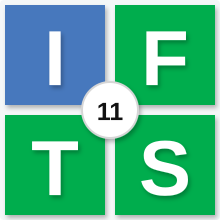

Resultado final
Tu tablero de repaso
0%resultado
Rendimiento
Resultado por tema
Puntos fuertes
Lo que dominás bien
Para reforzar

Resultado final
Rendimiento
Puntos fuertes
Para reforzar
Completá un cuestionario para generar tu tablero.
Comenzar repaso